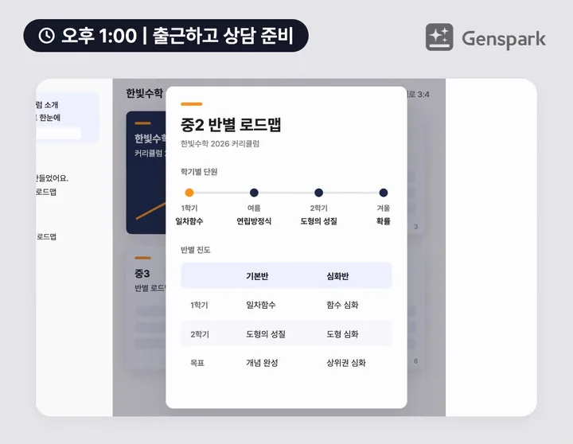
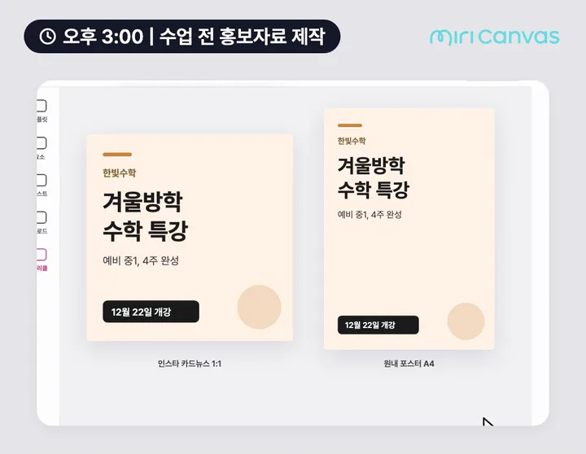
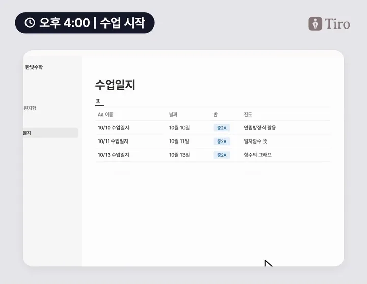
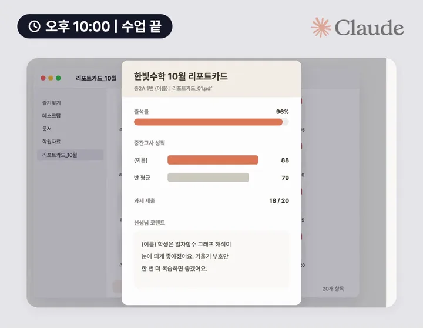
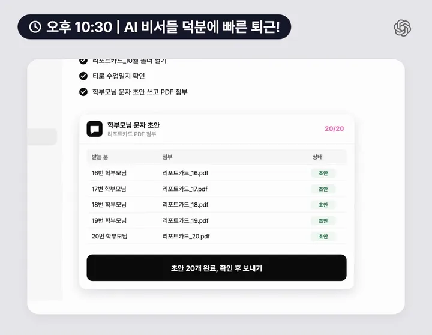

먼저 짚어 볼게요
원장님 하루, 귀찮은 순간 5개
출근해서 퇴근할 때까지, 원장님 하루를 시간 순서로 따라가 봤어요. "어, 이거 딱 나야" 싶은 장면을 눌러 그 툴로 바로 가 보세요. 다섯 개를 다 쓰실 필요는 없습니다.
- 오후 1:00 | 출근하고 상담 준비신규 상담 때마다 학년별, 반별 커리큘럼을 말로만 설명하는 순간01 젠스파크 AI 슬라이드 →
- 오후 3:00 | 수업 전 홍보자료 제작특강 포스터 문구를 매번 처음부터 다시 쓰는 순간02 미리캔버스 미리클 →
- 오후 4:00 | 수업 시작수업이 끝난 뒤 오늘 진도와 숙제를 수업일지로 다시 적는 순간03 티로 수업 녹음 →
- 오후 10:00 | 수업 끝출결, 성적 엑셀을 번갈아 열며 학생마다 리포트카드를 채우는 순간04 클로드 코워크 →
- 오후 10:30 | 퇴근 직전리포트카드를 하나씩 붙여 학부모님 문자를 스무 번 쓰는 순간05 챗GPT Record a skill →
툴마다 영상, 한 장 요약, 오늘 5분이면 해 보는 프롬프트 하나를 먼저 보여 드려요. 준비물, 상세 따라 하기, 응용 사례, 자주 막히는 곳, 주의점은 접어 두었으니 필요할 때 눌러 펼쳐 보세요. 따라 하기는 각 서비스의 공식 도움말과 사용법 영상을 기준으로 정리했고, 출처는 칸 맨 아래에 달아 두었습니다. 개인정보와 요금 이야기는 시작하기 전에에 모았어요.
오후 1:00 | 출근하고 상담 준비
01 | 젠스파크 AI 슬라이드
상담 전에 커리큘럼 책자 한 권

예시 화면이에요. 실제 화면 구성은 조금 다를 수 있어요.
학년별, 반별 커리큘럼만 올리면 한눈에 보이는 상담 책자가 나와요. 말 대신 펼쳐서 보여 주세요.
오늘 5분이면 해 보는 첫 한 가지
AI Slides에서 Creative 모드와 3:4 비율을 고르고, 커리큘럼 자료를 입력창에 끌어다 놓은 뒤 아래 문장을 붙여 넣어 보세요. [ ] 칸만 우리 학원 내용으로 바꿔 채우시면 됩니다.
왜 이 툴일까요
신규 상담에서 원장님이 가장 길게 설명하는 건 "우리 학원은 학년별로 이렇게 가르쳐요"입니다. 커리큘럼은 원장님께는 익숙하지만, 학부모님께 와닿게 설명드리기는 어렵죠. 말로 길게 풀수록 오히려 흐릿하게 들리기도 합니다.
그래서 상담에서는 한눈에 보이는 시각화 자료가 정말 중요해요. 학년별 로드맵과 반별 비교가 한 권으로 정리돼 있으면, 학부모님은 첫 상담에서 "이 학원은 체계가 잡혀 있구나"를 바로 느끼십니다. 상담의 첫인상이 등록을 좌우하는 만큼, 말보다 펼쳐 보여 드리는 자료 한 권이 원장님의 설명을 대신해 줘요.
젠스파크 AI Slides는 엑셀, PDF, 워드, 파워포인트 파일을 올리면 페이지를 하나씩 채워 슬라이드를 만들어 줘요. Creative 모드에서는 3:4 같은 세로 비율을 고를 수 있어서, 발표 화면이 아니라 상담 때 펼쳐 보여 주는 책자처럼 만들 수 있습니다.
준비물
- 요금제 무료로 시작할 수 있어요. 무료는 하루 100 크레딧이고(평생 무료 크레딧 한도를 다 쓰기 전까지), 브라우저에서 발표하고 링크로 공유하는 것까지 됩니다. PDF, PPTX로 내려받기는 Plus 이상 유료 요금제예요. 한 벌에 드는 크레딧은 후기마다 달라서 가입 후 확인해 주세요.
- 설치할 앱 설치할 앱은 없어요. 젠스파크 AI에 들어가 브라우저에서 바로 씁니다.
- 필요한 파일 학년별, 반별 커리큘럼 자료. PDF, 워드, 엑셀, 파워포인트로 올릴 수 있고, 한글(hwp) 파일은 PDF로 저장해 올려 주세요. 종이로만 있다면 스캔해서 PDF로 만들면 됩니다.
상세 따라 하기12단계
- genspark.ai 에 들어가 로그인합니다. 구글 계정으로 로그인할 수 있어요. 홈 화면이 열립니다.
- 홈 화면 아래쪽의 AI Slides를 누르거나, 왼쪽 사이드바 New 메뉴에서 고릅니다. 입력창이 보이고, 그 아래에 Skills 목록이 있어요.
- 입력창 위쪽에서 모드를 먼저 정합니다. 모드는 Professional과 Creative 두 가지이고, 모델은 Standard(크레딧 0.5배)와 Ultra(1배) 중에서 고릅니다. 세로 책자를 만들려면 Creative를 고르세요. Guide Mode 스위치는 기본으로 꺼져 있는데, 처음이라면 그대로 둬도 됩니다. 모드와 비율은 만들기 전에 정해야 해요.
- Creative 모드에서 비율을 3:4로 고릅니다. 고를 수 있는 비율은 16:9, 4:3, 1:1, 3:4, 9:16, 21:9이고, Professional 모드는 16:9만 됩니다. A4 비율은 없어서 3:4가 가장 가깝습니다. 비율 선택 칸의 정확한 위치는 화면이 다를 수 있어요.
- 모드와 비율은 프로젝트를 만든 뒤에는 바꿀 수 없어요. 잘못 골랐다면 새 프로젝트로 다시 시작합니다.
- (선택) 입력창 아래 Skills에서 분야별로 정리된 100개가 넘는 스킬 가운데 원하는 디자인 방향을 고를 수 있어요. 마음에 든 결과물은 나중에 ⋮ 메뉴의 Save as Skill로 저장해 두고 다음에 다시 쓸 수 있습니다.
- 커리큘럼 자료 파일을 입력창으로 끌어다 놓습니다. PDF, 워드, 엑셀, 파워포인트를 올릴 수 있어요. 입력창에 파일이 붙은 게 보입니다.
- 위 5분 박스의 프롬프트를 붙여 넣고 보냅니다. 페이지 구성과 "자료에 없는 건 비워 두라"는 문장은 지우지 마세요.
- AI가 작업 공간에서 페이지를 하나씩 채웁니다. 표지, 학년별 로드맵, 반 편성 기준 순서로 썸네일이 늘어나요.
- 고칠 곳은 슬라이드 위 도구 막대의 Select나 Draw로 고칩니다. Select는 요소를 눌러 AI에게 바꿔 달라고 하는 방식이고, Draw는 Pen, Marker, Box로 슬라이드에 표시를 여러 개 해 두고 Send N edits 버튼으로 한꺼번에 보내는 방식이에요. 직접 편집기(Edit)는 Professional 모드에서만 쓸 수 있어서, Creative 책자는 AI에게 말로 고치는 게 기본입니다.
- 반 이름, 학기별 단원, 반 편성 기준을 원본 자료와 한 장씩 대조합니다. [직접 입력]으로 비워 둔 칸은 원장님이 채워요.
- 상담 때는 위쪽 Present를 눌러 From beginning으로 띄우거나, Share 패널에서 General Access를 "Anyone with the link"로 바꾸고 Presentation share 링크를 복사해 학부모님께 보냅니다. 파일로 남기려면 Export에서 PDF, PPTX, Google Slides 중 하나를 골라 내려받아요. 내려받기는 유료 요금제에서만 되고, 크레딧은 들지 않습니다. Project share는 만드는 과정까지 보이니 학부모님께는 Presentation share를 쓰세요.
참고한 자료
- AI Slides 도움말, Genspark 공식 헬프센터
- Membership Plans, Genspark 공식 헬프센터
- Genspark AI Workspace Tutorial: Docs, Slides & Sheets, 유튜브 Genspark Products & Guides
- Genspark AI Slides Tutorial 2026 | Create AI Presentations Easily, 유튜브 The Pennywise Owl
이렇게도 써 보세요5가지
파일을 올려 페이지를 채우는 방법을 익히시면, 학원에서 "한 번 정리해서 보여 줘야 하는 자료"에 그대로 옮겨 쓸 수 있어요.
- 학부모 설명회 자료 작년 설명회 PPT와 올해 커리큘럼 자료를 같이 올리고, 순서는 그대로 두고 올해 내용으로 바꿔 달라고 하세요. 이때는 16:9 Professional 모드가 화면 발표에 맞아요.
- 반 편성 안내 한 장 반 편성 기준 표를 올려, 상담 끝에 학부모님께 드릴 반별 비교 한 장을 따로 만듭니다.
- 신규 강사 온보딩 자료 반 운영 원칙, 수업 흐름, 학부모 응대 기준을 적은 문서를 올려 새 선생님께 드릴 안내 자료로 만들어요. 물어볼 때마다 다시 설명하던 내용을 한 번에 넘겨 드릴 수 있습니다.
- 학기별 성과 보고서 학기 말에 반별 진도와 테스트 평균을 정리한 자료를 올려, 학부모님께 보여 드릴 학기 정리 자료를 만들어요. 학생 이름 없이 반 단위로만 씁니다.
- 시험 전 오답 풀이 수업 반에서 많이 틀린 문제 쪽을 스캔한 PDF로 올려, 한 문제당 2장씩 풀이 슬라이드를 만들어요. 풀이는 수업 전에 선생님이 꼭 직접 확인합니다.
자주 막히는 곳과 해결3가지
- 세로 비율이 안 보여요
- Professional 모드는 16:9만 돼요. 모드를 Creative로 바꿔야 3:4가 나옵니다. 이미 만든 프로젝트는 모드를 바꿀 수 없으니 새 프로젝트로 다시 시작해 주세요.
- 글자를 직접 고치고 싶은데 편집 칸이 안 열려요
- 직접 편집기는 Professional 모드 전용이에요. Creative 책자는 Select로 고칠 요소를 누르고 "이 표의 2학기 단원을 도형의 성질로 바꿔 줘"처럼 말로 요청합니다.
- 내려받으려니 결제 화면이 나와요
- 무료 요금제는 브라우저 발표와 링크 공유까지만 돼요. 상담 때 화면으로 보여 주거나 링크를 보내는 건 무료로도 되고, 인쇄할 PDF가 필요할 때만 유료로 올리시면 됩니다.
주의점
- 자료에 없는 수강료, 합격 실적, 학생 수를 AI가 그럴듯하게 채울 수 있어요. 숫자는 원장님이 직접 넣고, 수강료는 교육청에 신고한 금액과 같은지 확인하세요.
- 공유 링크는 링크만 있으면 누구나 볼 수 있어요. 내부 자료(강사 급여, 학생 명단)가 섞인 파일은 올리지 마세요.
- 문제집 내용을 슬라이드로 옮겨 원내 수업에 쓰는 것과 외부에 배포하는 것은 달라요. 출판사 저작권이 있으니 공유 링크는 학원 밖으로 돌리지 않습니다.
오후 3:00 | 수업 전 홍보자료 제작
02 | 미리캔버스 미리클
특강 포스터 문구까지 AI가 채워요

예시 화면이에요. 실제 템플릿과 메뉴 위치는 다를 수 있어요.
템플릿 하나 고르고 미리클에 '겨울방학 특강' 한 줄이면 카드뉴스와 포스터 문구가 채워져요.
오늘 5분이면 해 보는 첫 한 가지
특강 포스터 템플릿 하나를 열고, 편집기 왼쪽 아래 AI 버튼에서 AI 라이팅을 고른 뒤 아래 문장을 넣고 생성을 눌러 보세요. [ ] 칸만 우리 학원 내용으로 바꿔 채우시면 됩니다.
왜 이 툴일까요
GPT나 제미나이가 뽑아 주는 디자인에 많이 지치셨나요? 화려하지 않아도 심플하고 담백한, 우리 학원만의 디자인을 원하시는데 제작 시간이 두려우셨다면 미리캔버스를 꼭 써 보세요. AI가 처음부터 그려 낸 이미지는 어딘가 비슷해 보이기 쉬운데, 미리캔버스는 디자이너가 만든 템플릿 위에 우리 학원 로고와 사진, 색만 얹으면 되니 학원다운 홍보물이 금방 나옵니다.
특강 홍보물은 디자인보다 문구에서 시간이 더 걸려요. 제목을 몇 번씩 고쳐 쓰다 보면 수업 시간이 다가옵니다. 미리캔버스는 디자이너가 만든 한국형 학원 템플릿이 많아서 디자인은 템플릿에 맡기고, 문구는 미리캔버스 안의 AI 기능 묶음인 미리클(miricle)의 AI 라이팅에 맡기면 됩니다.
AI 라이팅은 공식 도움말 기준으로 글감 생성, 맞춤법 검사, 내용 정돈을 해 줘요. 예전에 있던 말투 바꾸기(친근하게, 더 격식 있게)는 지금은 지원하지 않는다고 안내돼 있어서, 원하는 말투는 처음 요청에 적어 주는 게 좋습니다.
준비물
- 요금제 무료로 시작합니다. AI 기능은 무료가 하루 200 크레딧, Pro가 하루 1,000 크레딧이에요. 왕관 표시가 있는 템플릿은 Pro에서만 쓸 수 있고, Pro는 멤버당 월 14,900원(연 160,800원)입니다.
- 설치할 앱 설치할 앱은 없어요. 미리캔버스에 들어가 브라우저에서 바로 씁니다.
- 필요한 것 학원 로고, 학원이나 수업 사진, 특강 이름, 대상, 일정, 상담 방법. 학생 얼굴 사진은 학부모님 동의를 받은 것만 씁니다.
상세 따라 하기12단계
- miricanvas.com 오른쪽 위 회원가입에서 이메일로 가입하거나 네이버, 카카오, 구글 계정을 고릅니다. 이메일 가입은 인증 메일을 눌러 마무리해요. 이메일과 소셜 아이콘이 있는 가입 창이 뜹니다.
- 첫 화면 오른쪽 위 디자인 만들기를 눌러 편집기를 엽니다. 왼쪽에 메뉴, 가운데에 빈 캔버스가 보여요.
- 템플릿에서 "학원 특강", "특강 모집"처럼 용도를 찾아 썸네일을 누릅니다. 템플릿 검색 칸의 위치는 화면이 다를 수 있어요.
- 템플릿 크기가 지금 캔버스와 다르면 썸네일의 더보기(점 세 개) 메뉴에서 "이 템플릿으로 덮어쓰기"를 고릅니다. 템플릿 크기 그대로, 여러 장짜리는 모든 페이지가 들어와요. 지금 작업하던 디자인은 덮어써지니 주의하세요.
- 썸네일에 왕관이 있으면 Pro 전용 템플릿이에요. 무료 템플릿 안에 들어 있는 프리미엄 요소는 캔버스에 워터마크로 보이니, 지우거나 다른 요소로 바꾸면 무료로 쓸 수 있습니다.
- 학원 이름, 날짜, 연락처 글자를 눌러 바꾸고, 학원 사진과 로고는 왼쪽 메뉴의 업로드로 올려 사진 자리에 바꿔 넣습니다. 업로드 메뉴 이름은 화면이 다를 수 있어요.
- 편집기 왼쪽 아래의 AI 버튼을 누르고 AI 라이팅을 고릅니다. 글자 도구 막대가 아니라 왼쪽 메뉴에 있어요.
- 위 5분 박스의 문장을 넣고 생성을 누릅니다. 무엇을 써야 할지 막막하면 예시 버튼으로 참고 문장을 먼저 볼 수 있어요.
- 만들어진 문장을 눌러 다듬습니다. 공식 도움말 기준으로 맞춤법 검사와 내용 정돈을 쓸 수 있고, 직접 고쳐 써도 돼요. 문장이 캔버스에 어떻게 들어가는지는 화면에서 한 번 확인해 주세요.
- 제목, 부제, 혜택 문장을 템플릿의 글자 칸에 맞춰 넣고 폰트, 색, 정렬로 정리합니다.
- 카드뉴스 여러 장은 캔버스 위의 페이지 복제로 같은 디자인을 복사해 이어 만들고, 크기를 바꾸려면 위쪽 크기 조정 > 직접 입력에서 바꿉니다. 자물쇠 아이콘으로 비율을 고정하고, 디자인 적용 방식(채우기, 맞추기, 원본 크기)을 고를 수 있어요. 크기 조정 화면은 버전에 따라 다를 수 있어요.
- 오른쪽 위 다운로드에서 파일 형식을 고르고 다시 다운로드를 누릅니다. 카드뉴스는 PNG(웹용), 원내 포스터는 PDF(인쇄용)가 맞아요. 인쇄소에 맡길 포스터는 위쪽 "인쇄용/상품 제작"에서 비즈하우스로 바로 주문할 수 있습니다. 프리미엄 요소가 남아 있으면 "콘텐츠 구입 후 다운로드" 안내가 나와요.
참고한 자료
- AI 기능(프레젠테이션, 라이팅, 이미지 생성) 사용하기, 미리캔버스 헬프센터
- 다운로드 가이드, 미리캔버스 헬프센터
- AI 라이팅 기능 소개, 미리캔버스
- 이 영상 하나면 미리캔버스 끝! 왕초보 올인원 패키지 (기본기부터 AI까지), 유튜브 Reveon Creative - 레브온 크리에이티브
이렇게도 써 보세요5가지
템플릿을 고르고 AI 라이팅으로 문구를 채우는 흐름을 익히시면, 학원에서 매달 돌아오는 안내물에 그대로 쓰실 수 있어요.
- 시험 대비 특강 안내 학교별 시험 일정이 나오면 같은 템플릿에서 대상 학년과 날짜만 바꾸고, AI 라이팅으로 시험 대비 특강 제목을 새로 받아요.
- 휴원 안내 명절이나 학교 행사로 쉬는 날을 알리는 공지를 A4 템플릿으로 만들어 원내에 붙이고, 같은 디자인을 카드뉴스 크기로 바꿔 학부모님께도 보냅니다.
- 원내 게시물 시험 기간 자습실 개방, 간식 DAY처럼 원내에 붙이는 안내를 포스터 한 장으로 빠르게 만들어요.
- 학원 블로그 썸네일 블로그 글을 올릴 때마다 쓰는 대표 이미지를 템플릿 하나로 정해 두고, 제목 문구만 AI 라이팅으로 바꿔 넣습니다.
- 신규 반 개설 모집 반 이름, 시간표, 대상만 바꿔 모집 포스터와 인스타 카드뉴스를 같은 디자인으로 맞춰요.
자주 막히는 곳과 해결3가지
- 다운로드하려니 결제하라고 나와요
- 왕관 표시가 있는 요소가 들어간 경우예요. 그 요소를 지우거나 무료 요소로 바꾸면 내려받을 수 있습니다. 프리미엄 요소만 따로 살 수도 있지만, 산 요소는 그 디자인 문서 하나에만 적용되고 내려받은 뒤에는 환불되지 않아요.
- AI 라이팅 버튼을 못 찾겠어요
- 글자 도구 막대가 아니라 편집기 왼쪽 아래 AI 버튼 안에 있어요. 무료 요금제는 하루 크레딧이 정해져 있어서, 다 쓰면 다음 날 다시 쓸 수 있습니다.
- 말투를 바꾸는 버튼이 없어요
- 공식 도움말 기준으로 말투 바꾸기는 지금 지원하지 않아요. 처음 요청에 "차분한 말투로", "부드러운 존댓말로"처럼 말투를 적어 주세요.
주의점
- 미리캔버스 템플릿과 요소로 만든 디자인은 홍보물로 게시하고 인쇄해도 됩니다. 다만 요소를 다른 툴로 가져가 편집하면 저작권 문제가 생길 수 있으니 미리캔버스 편집기 안에서 편집하세요.
- "최고", "100% 합격" 같은 과장 표현은 AI가 넣어도 빼 주세요. 수강료를 적는다면 교육청에 신고한 금액과 같은지 확인합니다.
- 학생 얼굴 사진은 학부모님 동의를 먼저 받으세요.
오후 4:00 | 수업 시작
03 | 티로 수업 녹음
수업은 녹음만, 일지는 알아서

예시 화면이에요. 실제 화면 구성은 조금 다를 수 있어요.
녹음이 끝나면 수업일지가 자동 정리돼요. 버튼 한 번이면 노션에 저장되고, 우리 학원 수업 기록이 매일 쌓여요.
오늘 5분이면 해 보는 첫 한 가지
티로에서 오늘 수업할 반 이름으로 폴더를 하나 만들고, 폴더 설정의 참석자에 그 반 학생 이름을 등록해 두세요. 다음 수업은 그 폴더 안에서 녹음을 시작하기만 하면 됩니다.
한 걸음 더 티로를 클로드에 연결해 두면, 채팅으로 "이 수업 때 내가 숙제 어디까지 내줬더라?"라고 그냥 물어보실 수 있어요. 연결 방법은 아래 "연동 자세히 보기"에 있습니다.
왜 이 툴일까요
가장 추천하는 연동: 클로드에게 그냥 물어보기(MCP)
티로의 MCP 기능으로 클로드를 연결하면, 수업 기록을 뒤적일 필요 없이 클로드에게 채팅으로 물어보시면 됩니다. 티로에 쌓인 수업 기록을 클로드가 직접 찾아 답해 줘요.
- "이 수업 때 내가 숙제 어디까지 내줬더라?"
- "지난주 중2A 진도 어디까지 나갔지?"
- "이번 달에 7번 학생한테 보충하라고 한 게 뭐였지?"
- "10월에 중3 반에서 시험 범위 안내한 날이 언제였지?"
연결하는 방법
- 클로드 웹: 설정의 커넥터에서 커스텀 커넥터를 추가하고, 이름 Tiro, 서버 주소 https://mcp.tiro.ooo/mcp 를 넣은 뒤 티로 계정으로 로그인합니다. 대화할 때 입력창의 [+] > [Connectors]에서 켜면 돼요. 클로드 무료 플랜에서도 커스텀 커넥터 1개를 쓸 수 있습니다.
- 클로드 데스크톱과 Claude Code: 같은 주소(https://mcp.tiro.ooo/mcp)를 MCP 서버로 추가합니다. 데스크톱 앱은 Node.js 설치 후 설정 파일에 넣는 방식이라, 티로 공식 문서 "티로를 AI와 연결하기"를 보며 따라 하시는 걸 권해요.
- 노션 수업일지와 함께 쓰려면 클로드 커넥터에서 Notion도 연결해 두고, 금요일에 "이번 주 중2A 수업 기록으로 위클리 리포트를 써 줘"처럼 요청하면 됩니다. 기록에 없는 내용과 다른 학생 이름은 빼 달라고 함께 적어 주세요.
원장님들이 가장 많이 꼽는 반복 업무가 "수업 끝나고 쓰는 학생별 기록"입니다. 티로는 대화를 실시간으로 받아 적고 정리해 주는 AI 녹음 앱이에요. 요즘은 무료 녹음 앱도 많고 네이버 클로바노트 같은 서비스도 잘되어 있지만, 티로는 노션, 슬랙, 구글 캘린더와 이어지는 연동과 MCP 기능이 강력합니다.
무엇보다 한국어를 잘 알아듣고, 우리 학원만의 맥락을 더해 이해하게 만드는 완성도가 뛰어나요. 수업별로 폴더를 나눠 관리하면 폴더마다 그 반 학생 이름을 등록해 둘 수 있고, 단어장에 교재 이름이나 단원명 같은 학원 고유 용어도 넣어 둘 수 있습니다. 그러면 수업 중에 편하게 학생 이름을 부르며 수업해도, 어떤 학생에게 무슨 말을 했고 무엇을 시켰는지, 숙제는 무엇을 냈는지까지 티로가 정리해 줘요.
휴대폰 앱도 잘되어 있어요. 기록 위젯을 홈 화면이나 잠금 화면에 추가해 두면 앱을 열지 않고 바로 녹음을 켤 수 있어서, 수업 시작할 때 녹음 준비에 드는 시간도 크게 줄어듭니다. 똑똑한 녹음 앱을 찾고 계셨다면 꼭 써 보시길 권해 드려요.
준비물
- 요금제 가입하면 무료 체험 100분을 주고, 3주 안에 과제 4개(첫 노트, 캘린더 연결, 데스크톱 앱, 모바일 앱)를 하면 최대 300분까지 늘어나요. 체험 중에는 노트 하나가 50분을 넘으면 내용이 흐리게 가려지고, 120분이 넘으면 녹음이 멈춥니다. 유료는 라이트 월 $7(월 300분)부터이고, 나만의 템플릿은 라이트부터 쓸 수 있어요. 원화 금액은 결제 화면에서 확인해 주세요.
- 설치할 앱 티로 휴대폰 앱(녹음, 잠금 화면 위젯)과 웹이나 데스크톱 앱(폴더 설정, 노션 보내기). 노트는 같은 계정이면 기기마다 동기화돼요.
- 필요한 것 수업 녹음 안내 공지, 반별 학생 명단, 노션 "수업일지" 데이터베이스(노션에 저장할 경우)
상세 따라 하기14단계
- 처음 한 번 설정
- tiro.ooo 에서 구글, 마이크로소프트 계정이나 이메일로 가입합니다. 결제 수단은 필요 없어요. 마지막 안내 화면에 [바로 노트 만들기] 버튼이 보입니다.
- 다운로드 페이지에서 데스크톱 앱(윈도우, 맥)을 받고, 휴대폰은 앱스토어나 구글 플레이에서 받습니다. 같은 계정으로 로그인하면 기기마다 노트가 동기화돼요.
- 사이드바 PRIVATE 영역에 반 이름으로 폴더를 만듭니다(예: 중2A 수학). 폴더 옆 [⋯] > [폴더 설정]에서 "중2 A반 수학 수업"처럼 설명을 적어 두면 AI가 맥락으로 씁니다. 새 폴더 버튼의 정확한 이름은 화면에서 확인해 주세요.
- 폴더 옆 [⋯] > 폴더 설정을 열고, 노트 제목(예: 중2A 수학 수업)과 참석자를 채웁니다. 참석자에 그 반 학생 이름을 등록해 두면 이 폴더에서 만드는 새 노트에 자동으로 들어가요. 폴더 설정 창에 노트 제목, 참석자 칸이 보입니다.
- 같은 창의 자동화 설정 탭에서 맞춤문서를 고릅니다. 기록이 끝날 때 자동으로 만들어질 문서 형식이에요. 수업 정리에 맞는 형식을 골라 두면, 이 폴더의 수업은 녹음이 끝나자마자 정리 문서가 생깁니다. 맞춤문서는 노트 하나씩이 아니라 폴더 단위로 걸려요.
- (선택) 같은 탭의 자동 공유 설정에서 Slack 채널을 고르면, 기록이 끝난 뒤 정리 내용이 선생님들 채널로 자동 공유됩니다.
- (선택) 티로의 단어장에 교재 이름, 단원명, 학원에서 쓰는 반 이름 같은 고유 용어를 등록해 두면 받아쓰기가 더 정확해져요. 단어장 메뉴 위치는 화면에서 확인해 주세요.
- 휴대폰에 티로 기록 위젯을 홈 화면이나 잠금 화면에 추가해 둡니다. 앱을 열지 않고 위젯을 눌러 바로 녹음을 시작할 수 있어요.
- 매 수업
- 반 폴더를 연 상태에서 새 노트를 시작합니다. 웹과 데스크톱은 [실시간 기록 시작](Cmd 또는 Ctrl + N), 휴대폰은 새 노트 화면에서 [실시간 기록] 모드를 고른 뒤 [실시간 기록 시작]을 누릅니다. 휴대폰 기본값은 오프라인 녹음 모드예요. 시작하면 빨간 버튼이 음성 파형으로 바뀝니다. 폴더 안에서 시작해야 자동화가 걸리니 첫날 한 번 확인해 주세요.
- (선택) 시작 전 [맥락 입력] 칸에 오늘 단원명과 진도를 적어 두면 정리가 더 정확해져요. 수업 중에는 학생 이름을 편하게 부르며 수업하셔도 됩니다.
- 쉬는 시간에는 [녹음 일시정지]와 [녹음 재개]를 쓰고, 수업이 끝나면 [기록 종료]를 누릅니다. 한 번 종료한 노트는 이어서 기록할 수 없어요. 휴대폰은 화면을 잠가도 녹음이 이어집니다.
- 노트의 [문서] 버튼을 눌러 자동으로 만들어진 정리 문서를 확인합니다. 진도, 숙제, 학생별로 시킨 것과 특이사항이 맞는지 보고 필요하면 고쳐요. 문서가 안 보이면 새로고침해 보세요.
- 노션에 저장
- 노션에 "수업일지" 데이터베이스를 하나 만들어 둡니다(속성은 날짜, 반, 선생님 정도). 티로 웹이나 데스크톱 앱에서 노트의 공유하기 > Notion을 누르면, 처음 한 번은 노션 연동 화면이 열려요. [설정] > [연동 관리]에서 미리 연결해 둘 수도 있습니다.
- 보낼 곳 검색창에서 수업일지 데이터베이스를 고르고, 담을 내용(요약, 스크립트, 생성 문서)을 체크해 보냅니다. 데이터베이스를 고르면 새 항목으로 들어가요. 생성 문서는 "수업일지 (한국어)"처럼 표시되고, 페이지가 검색되지 않으면 데이터베이스를 대상으로 고르라고 안내돼 있어요.
노션 보내기는 휴대폰 앱에서는 안 되고, 기록 중에도 쓸 수 없어요. 수업이 끝난 뒤 웹이나 데스크톱 앱에서 해 주세요.
참고한 자료
- 폴더 자동화, 티로 공식 문서
- 앱 안내(위젯), 티로 공식 문서
- 티로를 AI와 연결하기(MCP), 티로 공식 문서
- 내보내기(Notion), 티로 공식 문서
- Tiro 제품 소개 | AI 회의록 핵심 기능 4가지, 유튜브 티로 공식 채널
이렇게도 써 보세요6가지
폴더마다 참석자와 맞춤문서를 걸어 두는 방법을 익히시면, 수업 말고도 "말로 하고 나중에 글로 정리하던 일"에 그대로 옮겨 쓸 수 있어요. 녹음할 때는 상대에게 먼저 알리는 게 기본입니다.
- 상담 녹음으로 상담일지 "상담" 폴더를 따로 만들고 맞춤문서를 걸어 둡니다. 녹음 동의를 받은 상담만 녹음하면, 기억에만 의존하던 상담 기록이 남아요.
- 강사 회의록 "강사 회의" 폴더에 선생님들을 참석자로 등록하고 회의록 형식의 맞춤문서를 걸어, 누가 무엇을 언제까지 할지 정리합니다. 따로 확인하지 않아도 할 일이 한 장에 남아요.
- 학부모 설명회 Q&A 정리 설명회를 녹음해 학부모님 질문과 답을 정리합니다. 다음 설명회 자료와 자주 묻는 질문을 만들 때 그대로 써요.
- 클로드에게 수업 기록 물어보기 티로를 클로드에 연결해 두면 "이 수업 때 숙제 어디까지 내줬더라?", "중2A 진도 어디까지 나갔지?"를 채팅으로 바로 물어볼 수 있어요. 학부모님 전화가 와도 기록을 뒤질 필요가 없습니다.
- 매주 반별 위클리 리포트 노션에 쌓인 한 주 수업일지를 클로드에게 읽혀 반별 위클리 리포트로 묶습니다. 아래 "연동 자세히 보기" 칸에 연결 방법이 있어요.
- 선생님 교체 및 인수인계 체계 반 폴더에 쌓인 수업일지를 그대로 넘겨 드리면 진도와 막힌 부분이 한 번에 전달됩니다.
연동 자세히 보기: 노션, 슬랙, 클로드(MCP)선택
노션 위 따라 하기의 "노션에 저장" 단계대로, 웹이나 데스크톱 앱에서 노트의 [공유하기] > Notion으로 수업일지 데이터베이스에 보냅니다. 노션 자동 전송은 아직 새로 설정할 수 없어서, 수업마다 버튼을 한 번 눌러 주셔야 해요. 연결은 [설정] > [연동 관리]에서 미리 해 둘 수 있습니다.
슬랙 반 폴더의 [폴더 설정] > [자동화 설정] > 자동 공유 설정에서 채널을 고르면, 기록이 끝날 때 자동으로 공유돼요. 선생님들이 같은 채널에서 수업 기록을 바로 볼 수 있습니다.
구글 캘린더 티로 가입 후 과제에도 들어 있는 캘린더 연결을 해 두면, 수업 일정과 노트를 함께 관리하기 편해요. 연결해서 무엇이 달라지는지는 화면에서 한 번 확인해 주세요.
자주 막히는 곳과 해결3가지
- 녹음을 끝냈는데 수업일지가 안 생겨요
- 반 폴더 밖에서 노트를 시작했을 가능성이 커요. 폴더 자동화는 그 폴더에서 만든 노트에 적용됩니다. [폴더 설정] > [자동화 설정]에서 맞춤문서가 골라져 있는지도 확인해 주세요. 노트의 [문서]에서 문서를 다시 만들 수도 있어요.
- 공유하기를 눌러도 Notion이 안 보여요
- 휴대폰 앱에서는 노션 보내기가 안 돼요. 웹이나 데스크톱 앱에서 노트를 열고, 그래도 안 보이면 [설정] > [연동 관리]에서 노션부터 연결합니다.
- 90분 수업 녹음이 흐리게 가려졌어요
- 무료 체험은 노트 하나가 50분을 넘으면 내용이 가려지고, 120분이 넘으면 녹음이 멈춰요. 쉬는 시간 기준으로 나눠 녹음하거나 유료로 올리세요. 유료는 노트당 최대 5시간까지 됩니다.
주의점
- 녹음 전에 녹음한다는 사실을 먼저 알리세요. 수업 녹음은 학원 공지로 학생과 학부모님께 안내하고, 상담 녹음은 그때마다 동의를 받습니다.
- 수업 중 학생 이름이 그대로 기록돼요. 노션으로 보내거나 학부모님께 공유하기 전에 다른 학생 이름이 섞이지 않았는지 확인하세요.
- 노션 수업일지 데이터베이스의 공유 범위를 확인해 주세요. 공개 링크로 열어 두면 학생 기록이 밖으로 보일 수 있어요.
오후 10:00 | 수업 끝
04 | 클로드 코워크
리포트카드 20장, 알아서 완성

예시 화면이에요. 결과 파일 형식은 요청과 환경에 따라 달라질 수 있어요.
컴퓨터 속 출결, 성적 파일로 학생별 리포트카드를 만들어 폴더에 차곡차곡 저장해 둬요.
오늘 5분이면 해 보는 첫 한 가지
수업이 끝나면 출결, 성적, 과제 엑셀의 복사본을 담은 폴더를 코워크에 연결하고 아래 문장을 붙여 넣으세요. 작업 계획을 확인하고 실행을 허락하면, 정리하시는 동안 리포트카드가 폴더에 쌓여요.
* 위에서 클로드, 티로, 노션을 연동해 두셨다면 신세계를 맛보실 수 있어요. 엑셀을 따로 챙기지 않아도, 클로드에게 이렇게 시킬 수 있습니다. "매일 저녁 10시 반에 오늘 수업한 수업일지들을 티로에서 읽고, 노션의 당일 출결 정보와 과제 기록 데이터베이스를 함께 읽어서 학생별 데일리 리포트카드를 만들어 줘. 이미지로 만들어 내 컴퓨터 바탕화면의 '리포트카드_10월' 폴더에 저장해 줘." 정해진 시간에 돌리려면 코워크의 예약 작업을 쓰고, 그 시간에는 학원 컴퓨터와 클로드 앱이 켜져 있어야 해요.
왜 이 툴일까요
월말 리포트는 원생 수만큼 쌓여요. AI에게 엑셀을 맡기려면 보통 파일을 하나씩 올리고, 결과를 내려받고, 다시 폴더에 정리해야 합니다. 클로드 코워크는 반대로 원장님이 허락한 폴더 안에 들어와 출결, 성적 파일을 직접 열어 보고, 결과 파일을 그 폴더에 저장해 둬요.
밤새 맡겨 둘 필요는 없습니다. 수업이 끝나고 다른 정리를 하시는 동안 돌려 두면 돼요. 진행 상황은 화면에서 단계별로 보이고, 끝나면 무엇을 만들었는지 요약이 나옵니다.
준비물
- 요금제 유료 요금제(Pro, Max, Team, Enterprise)에서만 됩니다. Pro는 월 $20(연 결제 시 월 $17), Max는 월 $100부터예요. 여러 단계 작업이라 일반 질문보다 사용량을 많이 씁니다.
- 설치할 앱 클로드 데스크톱 앱(맥, 윈도우). claude.com/download 에서 받아요. 내 컴퓨터 폴더를 쓰는 작업은 데스크톱 앱이 열려 있는 동안에만 됩니다.
- 필요한 파일 출결, 성적, 과제 엑셀의 복사본을 모은 폴더 하나. 학생 이름은 번호로 바꾸고 연락처와 상담 메모는 빼 둡니다.
상세 따라 하기12단계
- claude.com/download 에서 윈도우나 맥용 설치 파일을 받아 실행합니다. 실행하면 나머지 파일을 알아서 받아 설치를 마쳐요.
- 앱에서 [시작하기]를 누르고 클로드 계정이나 구글 계정으로 로그인합니다. 처음에 단축키와 메뉴 막대 설정이 나오면 [계속]을 눌러요.
- 바탕화면에 '리포트카드_작업' 폴더를 만들고 출결, 성적, 과제 엑셀의 복사본을 넣습니다. 학생 이름 열은 번호로 바꾸고, 파일마다 학생 번호 열 이름을 똑같이 맞춰 두면 합칠 때 실수가 줄어요.
- 코워크로 바꿉니다. 공식 도움말은 입력창 왼쪽 아래에서 Cowork를 고른다고 안내하고, 화면에 따라 창 위쪽에 Chat, Cowork, Code 탭으로 보이기도 해요. 최근 바뀐 새 클로드 화면에서는 클로드가 대화로 답할지 작업을 할지 알아서 정해서, 이 선택 단계가 없을 수 있어요.
- 입력창 아래에서 폴더를 연결합니다. 화면에 따라 "Work in a Folder"로 보여요. 폴더 선택 창에서 '리포트카드_작업' 폴더를 고릅니다. 일과 관련된 가장 작은 폴더를 고르는 게 안전해요.
- 이 폴더의 파일을 읽고, 고치고, 지워도 되는지 묻는 권한 창이 뜨면 허용합니다. 한 번만 허용할 수도 있고 Always Allow를 고를 수도 있어요. 클로드는 연결한 폴더 안에서만 읽고 쓰고, 그 밖은 건드리지 않습니다.
- 승인 방식을 고릅니다. Manually approve(읽기와 쓰기 모두 매번 확인), Automatically approve(읽기는 자동, 쓰기와 지우기는 클로드가 판단), Skip all approvals(모두 자동) 세 가지예요. 처음에는 Manually approve로 지켜보세요.
- 위 5분 박스의 프롬프트를 붙여 넣고 보냅니다.
- 클로드가 보여 주는 작업 계획을 읽고, 맞으면 실행을 허락합니다. 계획 승인 버튼 이름은 화면에서 확인해 주세요.
- 오른쪽 사이드바에서 진행 상황을 봅니다. 어떤 파일을 열고 어떤 판단을 했는지 단계마다 보여요. Manually approve 모드에서는 동작마다 허락을 묻고, 파일을 지우기 전에는 반드시 허락 창(Allow)이 뜹니다.
- 끝나면 결과 요약이 나와요. 만든 파일은 Artifacts 창에서 눌러 미리 볼 수 있고, '리포트카드_10월' 폴더에도 저장돼 있습니다. PDF로 나왔는지 첫 장으로 확인해 주세요.
- 학생 2~3명만 원본 엑셀과 숫자를 대조하고, 선생님 코멘트 칸을 채운 뒤 학부모님께 공유합니다. 공유 문자는 다음 섹션의 챗GPT 스킬로 이어서 준비할 수 있어요.
로컬 폴더 작업은 데스크톱 앱이 열려 있고 인터넷이 연결된 동안에만 됩니다. 수업 끝나고 컴퓨터 앞에서 바로 돌리면 이 조건이 자연스럽게 맞아요.
참고한 자료
- Get started with Claude Cowork, Anthropic 공식 고객지원
- Use Claude Cowork safely, Anthropic 공식 고객지원
- 클로드 코워크란? 핵심 기능부터 윈도우 설치까지, 엑셀러 권현욱
- Learn 80% of Claude Cowork in Under 20 Minutes, 유튜브 Jeff Su
이렇게도 써 보세요5가지
폴더를 연결해 엑셀을 읽히고 결과 파일을 저장받는 방법을 익히시면, 학원에서 "여러 시트를 오가며 손으로 합치던 일"에 그대로 쓸 수 있어요.
- 시험 결과 분석표 채점 엑셀을 넣어 두고, 문항별 정답률과 반별 평균, 정답률이 낮은 문항 3개를 정리한 분석표를 같은 폴더에 저장받아요. 퇴근 후 채점 엑셀 정리를 줄일 수 있습니다.
- 미납 현황 정리 수납 엑셀 복사본에서 이번 달 미납 학생 번호와 금액, 미납 개월 수를 표로 뽑아 둡니다. 안내 문구는 원장님이 직접 다듬어 보내세요.
- 흩어진 자료 폴더 정리 "최종", "최종2"가 쌓인 자료 폴더 복사본을 학년, 과목, 학교 순서로 나눠 정리시켜요. 옮기기 전에 계획부터 보여 달라고 하면 안전합니다.
- 상담 대상 추리기 출결과 과제 엑셀을 합쳐 출석률이나 과제 제출률이 낮은 학생 번호만 '상담대상' 파일로 뽑아 상담 주간을 준비해요.
- 시험 기간 자습실 출석 추첨 시험 기간에 자습실을 열고 출석한 학생 중 추첨해 장학금을 주는 학원들이 있어요. 출석 기록 엑셀로 추첨 대상 명단을 뽑아 둡니다.
자주 막히는 곳과 해결3가지
- Cowork 선택이 안 보여요
- 무료 요금제에서는 쓸 수 없어요. 유료 요금제로 로그인했는지 먼저 봅니다. 새 클로드 화면에서는 선택 단계 없이 바로 작업을 맡기면 되니, 폴더를 연결하고 요청을 보내 보세요.
- 작업이 중간에 멈춰 있어요
- Manually approve 모드라면 클로드가 허락을 기다리는 중일 때가 많아요. 화면의 허락 요청을 확인해 주세요. 앱을 닫거나 컴퓨터가 잠들면 세션은 남아 있어도 내 컴퓨터 파일에는 접근하지 못합니다.
- 리포트카드 숫자가 원본과 달라요
- 파일마다 학생 번호 열 이름이 다르면 잘못 합쳐질 수 있어요. 열 이름을 통일하고 "학생 번호 열을 기준으로 합쳐 줘"라고 적어 주세요. 첫 달은 꼭 2~3명을 원본과 대조합니다.
주의점
- 폴더를 연결하면 그 안의 파일은 전부 클로드가 볼 수 있어요. 학생 연락처, 상담 메모, 수납 정보가 든 파일은 폴더에서 빼고 연결하세요.
- Skip all approvals는 지우기까지 묻지 않고 진행할 수 있어요. 학원 자료에서는 Manually approve나 Automatically approve를 권해 드립니다.
- 리포트카드는 초안이에요. 코멘트와 숫자는 원장님이 확인한 뒤 공유합니다.
오후 10:30 | AI 비서들 덕분에 빠른 퇴근!
05 | 챗GPT Record a skill
한 번 보여 주면, 다음부턴 GPT가 해요

예시 화면이에요. 실제 화면 구성은 조금 다를 수 있어요.
리포트카드 붙인 학부모 문자를 한 번 녹화하면 다음부터는 GPT가 그대로 따라 해요. 원장님은 확인하고 보내기만 하세요.
오늘 5분이면 해 보는 첫 한 가지
1번 학생 문자를 한 번 녹화해 스킬로 저장했다면, 새 Work 대화에서 그 스킬을 불러 아래 문장을 보내 보세요. [ ] 칸만 우리 학원 내용으로 바꿔 채우시면, 바뀌는 값에 맞춰 같은 순서로 따라 합니다.
왜 이 툴일까요
매일 밤 학부모님 문자를 스무 통씩 쓰고 계셨다면, 이 기능 하나로 퇴근 시간이 확 달라져요. 리포트카드를 만들었다고 끝이 아니죠. 학생마다 PDF를 찾아 붙이고, 같은 안내 문구를 스무 번 쓰는 일이 남습니다. 새로 온 선생님께 "이렇게 하시면 돼요" 하고 한 번 보여 드리듯, 챗GPT에게도 한 번만 보여 주면 그다음부터는 그대로 따라 해요. 원장님은 마지막에 확인하고 보내기만 하시면 됩니다.
챗GPT 맥 데스크톱 앱의 Record & Replay는 원장님이 맥에서 한 번 해 보이는 과정을 녹화해 "스킬"로 만들어 둬요. 다음부터는 바뀌는 값(학생 번호, 파일)만 알려 주면 챗GPT가 컴퓨터 사용(Computer Use) 기능으로 같은 순서를 따라 합니다.
메뉴에서는 Record a skill로 보이고, Work 모드 안의 기능이에요. 2026년 6월에 나왔고, 출시 때 EEA, 영국, 스위스는 제외됐지만 한국은 쓸 수 있습니다.
알아 두면 좋은 점: 채팅과 Work
채팅은 읽고 끝나는 답을 주고, Work는 고쳐 쓸 수 있는 완성 파일과 작업을 해 줍니다. 문자 한 통 다듬기는 지금처럼 채팅이 빠르고 편해요. 여러 파일을 열고 붙이는 반복 작업만 Work와 스킬로 넘기면 됩니다.
요금제 Work와 Codex는 무료부터 모든 요금제에 들어 있고 사용량을 함께 써요. 무료와 Go는 데스크톱 앱에서 제한적으로(순차 제공), Plus부터 웹과 휴대폰에서도 열립니다. Record & Replay에만 따로 붙는 요금제 제한은 공식 문서에 없어요. Work는 채팅과 사용량을 따로 세고, 작업이 클수록 빨리 닳습니다.
준비물
- 요금제 챗GPT 계정(무료도 데스크톱 Work를 제한적으로 쓸 수 있어요). 넉넉하게 쓰려면 Plus를 권해 드려요.
- 설치할 앱 맥용 챗GPT 데스크톱 앱. Record & Replay는 맥 전용이고 Computer Use 기능이 켜져 있어야 해요. 메시지 앱으로 문자를 보내는 Apple Messages 플러그인은 애플 실리콘 맥에서만 됩니다.
- 필요한 것 리포트카드 PDF가 든 폴더, 학생 번호와 학부모님 연락처를 이어 둔 연락처나 대화방. 녹화 연습은 가짜 이름과 연습용 PDF로 하세요.
상세 따라 하기14단계
- 처음 한 번 설정
- 챗GPT 다운로드 페이지에서 맥용 데스크톱 앱을 받아 설치하고 로그인합니다. 이미 있다면 최신 버전으로 업데이트해요.
- 입력창 위 전환 버튼에서 Work를 켭니다. Chat과 Work 중 Work가 선택돼 있어야 해요.
- Plugins > Computer Use로 들어가 Install plugin(또는 Enable)을 누르고, Computer Use 서버와 스킬 토글을 켭니다. Try now로 한 번 시험해 볼 수 있어요.
- 맥이 권한을 물으면 화면 기록(Screen Recording)과 손쉬운 사용(Accessibility)을 허용합니다. 챗GPT가 화면을 보지 못하거나 앱을 조작하지 못하면 시스템 설정 > 개인정보 보호 및 보안에서 두 항목을 확인해 주세요. 목록에는 "Codex Computer Use"로 보여요.
- 한 번 보여 주고 스킬로 저장
- Plugins에서 + 메뉴를 열고 Record a skill을 고릅니다. 입력창에 추천 문장이 미리 채워져요.
- 그 문장에 하려는 일과 바뀌는 값을 적어 보냅니다. 예: "학부모님 문자에 [첨부할 자료] PDF를 붙여 보내는 일. 바뀌는 값은 학생 번호와 파일".
- 준비가 되면 녹화 권한 요청을 승인합니다.
- 맥에서 1번 학생 일을 직접 한 번 해 보입니다. '리포트카드_10월' 폴더를 열고, 1번 PDF를 고르고, 메시지 창에 안내 문구를 쓰고, PDF를 첨부해요. 짧고 끝까지, 민감하지 않은 연습용 자료로 해 주세요.
- 시연이 끝나면 메뉴 막대나 화면 위에 뜬 오버레이에서 녹화를 멈춥니다. 녹화 중 표시의 모양은 공식 문서에 자세히 나와 있지 않아요.
- 챗GPT가 녹화를 보고 스킬 초안을 만듭니다. 언제 쓰는지, 필요한 입력, 단계, 결과 확인 방법이 정리돼 있어요. 이름은 "리포트카드 문자"로 해 달라고 하고, "보내기 전에 멈추기", 문자 말투 같은 규칙을 덧붙여 다듬습니다.
- 다음부터 실행
- 새 Work 대화를 열고 저장한 스킬을 불러 위 5분 박스의 문장을 보냅니다. 스킬 이름으로 부르거나, 스킬 설명과 맞는 일을 말로 설명하면 돼요. 스킬을 고르는 버튼이나 @ 표시는 화면에 따라 다를 수 있어요.
- 챗GPT가 같은 순서로 폴더와 파일을 열고 문자 초안을 채웁니다. 앱마다 쓰기 허락을 물으면 확인하고 허락해 주세요.
- 메시지 플러그인으로 보낼 때는 받는 분과 내용을 원장님이 승인해야 보내져요. Allow once로 한 건씩 확인하고, Always allow sending to this chat은 켜지 않는 걸 권합니다. Full access 모드에서는 발송 확인 창이 안 뜨는 문제가 알려져 있으니 Ask for approval 모드로 쓰세요.
- 나중에 건별 확인을 되살리려면 Settings > Computer use에서 Messages 옆 Manage > Always allowed to send에서 휴지통 아이콘을 눌러 지웁니다.
한 번 실행으로 20명을 끝까지 안정적으로 반복하는지는 공식 문서에 나와 있지 않아요. 처음에는 5명 정도로 나눠 실행해 보시는 걸 권해 드려요.
처음이라면 이 영상부터 (한국어 튜토리얼)
- 반복 업무, 이제 말로 설명하지 말고 Codex에 보여주세요, 유튜브 시민개발자 구씨(13분, 조회수 약 1.5만). 환경 설정(맥, Computer Use, 플러그인)부터 한 번 녹화해 스킬로 만들고 다시 쓰는 과정까지 처음부터 끝까지 보여 줘서 초보자에게 가장 좋아요. 화면은 Codex 앱이지만 녹화 흐름은 같습니다.
- 99%가 아직 모르는 ChatGPT 워크. 화면만 녹화하면 100% 자동화로 구현됩니다, 유튜브 빌더 조쉬(36분, 조회수 약 11만). ChatGPT Work 전체를 다루고, 23분부터 Record and Replay로 스킬을 만드는 실습이 나와요. 링크를 누르면 그 부분부터 재생됩니다.
- Codex의 레코드 & 리플레이 기능, 유튜브 OpenAI 공식(2분, 조회수 약 13만). 기능이 어떻게 돌아가는지 2분 만에 감을 잡는 공식 소개 영상이에요.
참고한 자료
- Record & Replay, ChatGPT Learn(OpenAI 공식)
- Computer Use, ChatGPT Learn(OpenAI 공식)
- Plugins(Apple Messages), ChatGPT Learn(OpenAI 공식)
이렇게도 써 보세요4가지
한 번 보여 주고 스킬로 저장하는 방법을 익히시면, 학원에서 "같은 순서로 매일 반복하는 연락"을 스킬로 만들어 둘 수 있어요. 보내기는 언제나 원장님 확인 뒤에 합니다.
- 결석생 연락 출결 화면에서 오늘 결석생 번호를 확인하고 학부모님께 안부와 보강 안내 문자를 쓰는 과정을 한 번 녹화해 두면, 매일 결석생 문자 초안을 준비시킬 수 있어요.
- 신규 문의 답장 새 문의가 오면 수업 안내 자료를 열어 상담 가능 시간과 함께 답장 초안을 쓰는 과정을 스킬로 만들어요. 밤에 쌓인 문의에 답장 초안부터 받아 두는 용도입니다.
- 주간 공지 발송 준비 시간표 변경, 특강, 시험 일정 공지를 반별 대화방에 올릴 문구와 첨부 파일로 준비하는 과정을 녹화해, 매주 같은 순서로 초안을 만들게 합니다.
- 미납 안내 문자 초안 코워크로 정리한 미납 현황표를 보고 학생 번호별 안내 문자 초안을 쓰는 과정을 스킬로 만들어요. 민감한 안내라 말투와 금액은 원장님이 한 건씩 확인합니다.
자주 막히는 곳과 해결3가지
- Record a skill 메뉴가 안 보여요
- 맥 데스크톱 앱에서 Work가 켜져 있는지, Computer Use 플러그인이 설치되고 켜져 있는지 확인해 주세요. 윈도우와 웹, 휴대폰에서는 Record & Replay를 쓸 수 없어요.
- 챗GPT가 화면을 못 보거나 클릭을 못 해요
- 맥 시스템 설정 > 개인정보 보호 및 보안에서 화면 기록과 손쉬운 사용에 "Codex Computer Use"가 켜져 있는지 봅니다. 맥의 보안 창이나 관리자 암호 입력은 챗GPT가 대신하지 못해요.
- 문자를 보낼 때 확인 창이 안 떠요
- Full access 모드에서 알려진 문제예요. Ask for approval 모드로 바꾸고, Always allowed to send에 등록된 대화방이 있다면 지워 주세요.
주의점
- 발송 전 확인은 꼭 남겨 두세요. 건별 승인을 끄면 마지막으로 확인할 기회가 사라집니다. 받는 분과 첨부 PDF가 같은 학생인지 한 건씩 봐요.
- 녹화하는 동안 챗GPT는 화면 내용을 봐요. 녹화와 실행 때는 다른 학생 정보, 수납 화면, 메신저 대화창을 닫아 두고, 연습은 가짜 이름과 연습용 PDF로 합니다.
- 리포트카드는 학생 개인정보예요. 학부모님 연락처와 PDF가 엇갈리지 않게, 학생 번호와 파일 이름 규칙을 먼저 맞춰 두세요.
시작하기 전에
다섯 툴 모두 공통으로 지킬 것
- 학생 실명, 연락처, 주민번호, 주소, 성적, 상담 내용은 AI에 그대로 넣지 않습니다. 이름은 번호로 바꿔도 결과는 같아요.
- 소개한 기능은 대부분 유료 요금제에서 제대로 열려요. 무료로 먼저 써 보고, 매일 여는 툴 하나만 유료로 올리세요.
- 학부모님께 가는 문자와 파일은 언제나 원장님이 확인한 뒤 나가게 해 두세요.
- AI가 만든 문장과 숫자는 초안입니다. 날짜, 금액, 학교 이름은 보내기 전에 한 번 더 확인해 주세요.
다섯 개 중 하나만 이번 주에 써 보셔도 충분합니다. 제일 귀찮았던 일이 하나 줄어들면, 그다음 툴은 훨씬 쉽게 붙어요.
이 글의 기능과 요금은 2026년 10월 1일 각 서비스 공식 도움말 기준이에요. 버튼 이름과 위치, 요금제는 자주 바뀌니 결제 전에 공식 페이지를 한 번 더 확인해 주세요.
함께 만드는 사람들
크래빗과 올커니를 소개할게요
크래빗
크래빗은 학원 원장님과 학생을 잇는 서비스예요. 지금 학원 1,400곳, 학생 9만 명이 크래빗을 쓰고 있습니다. 크래빗 아카데미에서는 원장님 업무에 바로 쓰는 자료와 강의를 나눠요.
크래빗 알아보기 →올커니 커뮤니티
올커니는 원장님들을 위한 커뮤니티예요. 금요일마다 열리는 Black Friday 강의를 비롯해 무료와 유료 강의가 자주 열립니다. 들어오셔서 편하게 둘러보시다가, 마음에 드는 강의를 콕 집어 들어 보세요. 올커니 강의는 원장님들 만족도가 높아요.
올커니 커뮤니티 들어가기